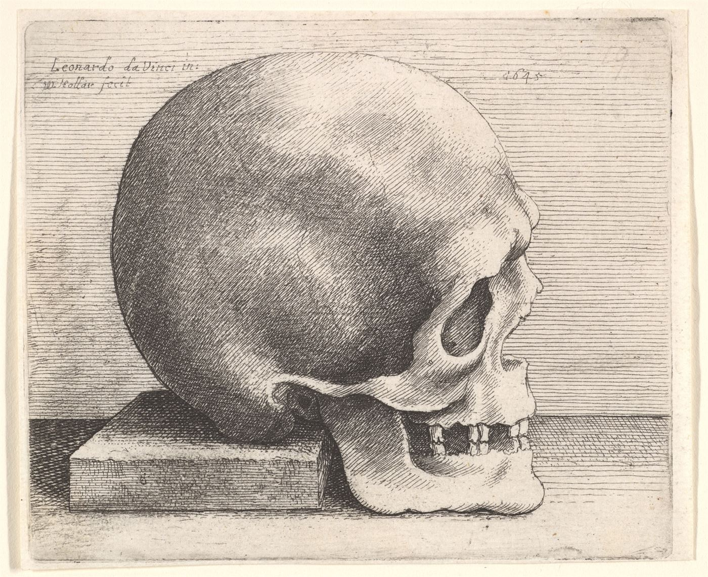
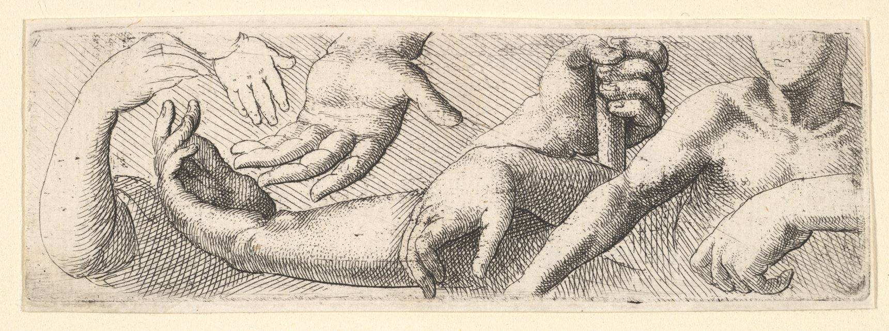
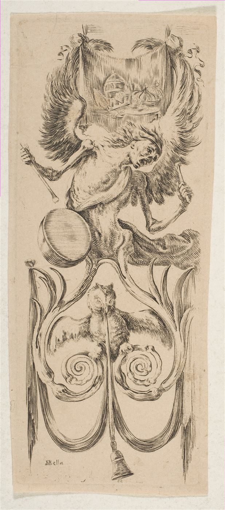

1
1
2 3
3
4 5
5
6making noise in austin, tx.
JoshProcell
sound designer.
audio engineer.
musician.
1
23
45
6sound designer.
audio engineer.
musician.
1 A Pipe Organ with Papal Arms, anon. Italian, 16th c.2 Skull in profile to right, Wenceslaus Hollar, 16453 A Machine for a Moveable Galatea in a Grotto, Salomon de Caus, 16154 Hands and arms, Wenceslaus Hollar, 1644–525 Anatomical study of a man seen from Behind, Jan Steven van Calcar, 1543 (1934 print)6 Death Beating a Drum, Stefano della Bella, ca. 1653The Metropolitan Museum of Art, Open Access (CC0)